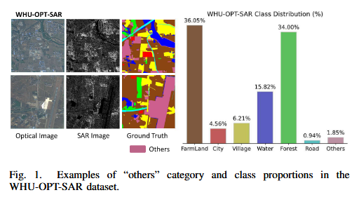
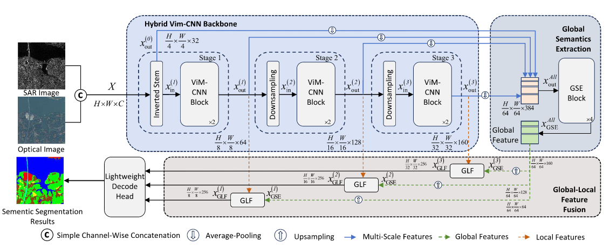
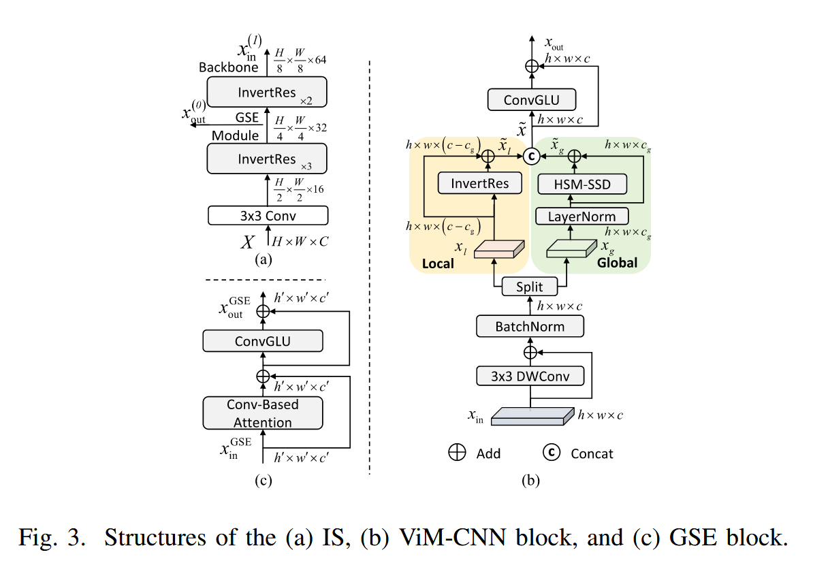
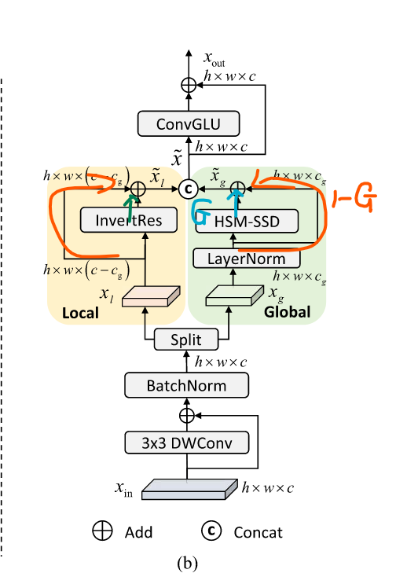
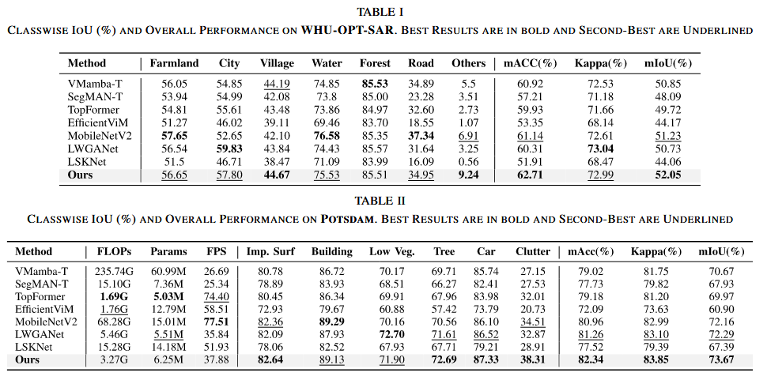
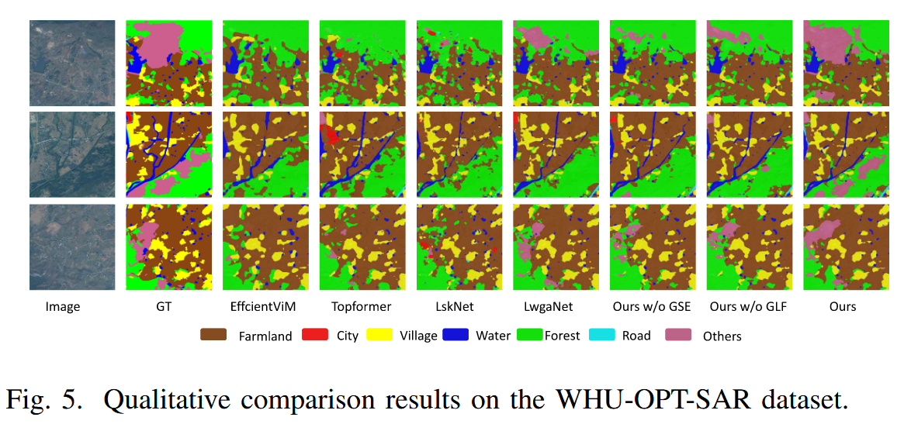
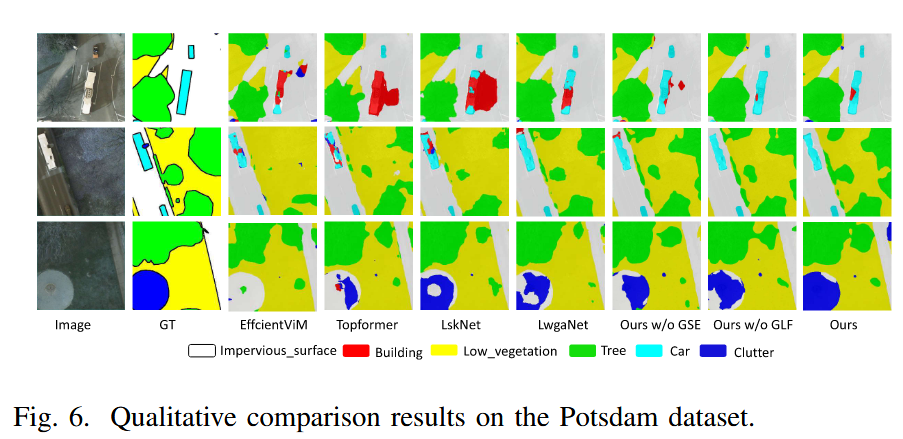
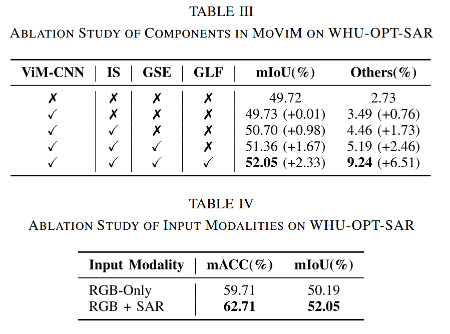

# Methods and datasets on semantic segmentation for Unmanned Aerial Vehicle remote sensing images: A review
- 【Original Link】 MoViM: A Hybrid CNN Vision Mamba Network for Lightweight Semantic Segmentation of Multimodal Remote Sensing Images
- Published in: IEEE Geoscience and Remote Sensing Letters ( Volume: 22)
- Volume 211, May 2024, Pages 1-34
- Authors
- Wen-Liang Du
- Shuo Tang
- Rui Yao
- Zeyu An
- Yong Zhou
# Abstract
The “Others” category in multimodal remote sensing images is characterized by high intra-class variability. Therefore, existing lightweight semantic segmentation models struggle with this category due to limitations in capturing both local details and global dependencies efficiently. We propose MoViM, a lightweight model that integrates a hybrid Vision Mamba (ViM) and CNN backbone to capture global contextual information and local details effectively. In addition, the MoViM also features an Inverted Stem for efficient multimodal fusion, a Global Semantics Extraction (GSE) module for enhanced global feature representation, and a Global-Local Feature Fusion (GLF) module for context-aware feature integration. Extensive experiments on WHU-OPT-SAR and Potsdam datasets demonstrate that MoViM achieves state-of-the-art performance, particularly in the “Others” category, while maintaining low computational complexity. Our codes are available at https://github.com/WenliangDu/MoViM.
多模态遥感图像中的 “其他” 类别具有高度的类别内变异性。因此，现有的轻量级语义分割模型在处理该类别时存在困难，因为在高效捕捉局部细节和全局依赖方面存在局限。我们提出了 MoViM，一种轻量级模型，集成了混合的 Vision Mamba（ViM）和 CNN 骨干网，以有效捕捉全球情境信息和本地细节。此外，MoViM 还配备了倒置茎以实现高效的多模态融合 ，一个全局语义提取（GSE）模块以增强全局特征表示，以及一个全局 - 局部特征融合（GLF）模块，用于上下文感知特征集成。在 WHU-OPT-SAR 和 Potsdam 数据集上的大量实验表明，MoViM 在 “其他” 类别中实现了最先进的性能，同时保持了低计算复杂度。我们的代码可在 https://github.com/WenliangDu/MoViM 获取。
Index Terms—Hybrid convolutional neural network (CNN) vision mamba (ViM), lightweight semantic segmentation, multimodal remote sensing.
指标术语 —— 混合卷积神经网络（CNN）、视觉曼巴（ViM）、轻量级语义分割、多模态遥感。
# INTRODUCTION
The semantic segmentation of satellite-based multisource remote sensing images achieves significant improvements in the accuracy of surface information extraction by integrating data from heterogeneous sensors, such as optical, synthetic aperture radar (SAR), and infrared radiation. Developing lightweight models is crucial for enabling real-time remote sensing image interpretation on satellites.
基于卫星的多源遥感图像的语义分割通过整合光学、合成孔径雷达（SAR）和红外辐射等异构传感器的数据，显著提升了表面信息提取的准确性。开发轻量化模型对于实现卫星实时遥感图像解读至关重要。
Existing lightweight semantic segmentation models can mainly be categorized into two types: based on convolutional neural networks (CNNs) and based on hybrid architectures combining CNN and attention.
现有的轻量级语义分割模型主要可分为两类：基于卷积神经网络（CNN）和基于结合 CNN 与注意力的混合架构。
CNN-based architectures (e.g., LSKNet) excel at capturing local details but inherently struggle to model long-range dependencies, leading to an incomplete global feature representation. Hybrid models, such as TopFormer, SegMan , and MobileMamba , attempt to represent local and global feature encoding using dynamic token aggregation or state-space modeling. Nevertheless, lightweight models commonly face a significant challenge: they struggle to effectively represent the “others” category, which typically encompasses highly diverse and nonfixed targets. Fig. 1 illustrates the examples of the “others” category in WHU-OPT-SAR dataset, along with the class distribution within the dataset. The proportion of the “others” category is nearly double that of the “road” category, underscoring the importance of evaluating lightweight methods for “others” segmentation. In addition, effectively segmenting the “others” class helps reduce the likelihood of methods misclassifying unseen content into known categories, thereby lowering the risk of overfitting [5]. However, the high intraclass variability and visual similarity of “others” to adjacent classes (e.g., buildings, roads) significantly increase segmentation difficulties, resulting in poorer performance of lightweight methods in the “others” segmentation. Consequently, excluding “others” from the evaluation of lightweight methods has become a common but unreasonable practice.
基于 CNN 的架构（例如 LSKNet）擅长捕捉局部细节，但本质上难以建模长距离依赖关系，导致全局特征表示不完整。混合模型，如 TopFormer 、SegMan 和 MobileMamba，尝试通过动态令牌聚合或状态空间建模来表示局部和全局特征编码。然而，轻量级模型通常面临重大挑战：它们难以有效代表 “其他” 类别，而该类别通常涵盖高度多样化且非固定的目标。图 1 展示了 WHU-OPT-SAR 数据集中 “其他” 类别的示例，以及该数据集内的类别分布。“其他” 类别的比例几乎是 “道路” 类别的两倍，凸显了评估轻量级方法对 “其他人” 细分的重要性。此外，有效分割 “其他 ” 类有助于减少方法将看不见内容误归为已知类别的可能性，从而降低过拟合的风险 [5]。然而，“他者” 在类别内的高度变异性和与相邻类别（如建筑物、道路）的视觉相似性显著增加了分段难度，导致轻量级方法在 “他者” 分段中表现较差。因此，将 “他者” 排除在轻量级方法评估之外已成为一种常见但不合理的做法。

To tackle this challenge, we propose the MoViM method, which focuses on comprehensive global and local feature extraction and representation, aiming to improve the segmentation performance for the “others” category. Specifically, MoViM’s lightweight backbone network is inspired by the powerful local feature representation capabilities of MobileNet’s lightweight depthwise convolution and by vision mamba’s (ViM) excellent global feature modeling ability under linear attention. Consequently, we constructed a hybrid ViM-CNN backbone, designed to efficiently capture the global contextual information and local detail features of heterogeneous targets like “others.” Considering the characteristics of multisource remote sensing data, we propose an inverted stem (IS) at the start of the hybrid ViM-CNN backbone to achieve lightweight and efficient multisource feature fusion. Additionally, we design a global semantics extraction (GSEs) module to further enhance the capability to capture the global features of targets and introduce a global–local feature (GLF) fusion module to promote effective integration of the global and local features. lightweight models in semantic segmentation performance, with particularly significant improvements in the “others” category.
为应对这一挑战，我们提出了 MoViM 方法，该方法侧重于全面的全局和局部特征提取与表示，旨在提升 “其他” 类别的细分性能。具体来说，MoViM 的轻量骨干网络受到了 MobileNet 轻量级深度卷积的强大局部特征表示能力以及 vision mamba（ViM）在线性关注下卓越的全局特征建模能力的启发。因此，我们构建了一个混合的 ViM-CNN 骨干网，旨在高效捕捉异构目标如 “其他” 的全球上下文信息和局部细节特征。考虑到多源遥感数据的特性，我们提出在混合 ViM-CNN 骨干的起始处采用倒置 stem（IS），以实现轻量化且高效的多源特征融合。此外，我们设计了一个全局语义提取（GSEs）模块，进一步提升捕获目标全局特征的能力，并引入全局 - 局部特征（GLF）融合模块，促进全局与局部特征的有效整合。轻量级模型在语义分割性能上表现突出，尤其在 “其他” 类别中有显著改进。
Our main contributions are summarized as follows.
- We reveal that the main reason for the poor performance of the existing lightweight models in semantic segmentation of multisource remote sensing images is the difficulty in effectively representing the “others” category, which consists of highly diverse target collections.
- We design the MoViM lightweight model. By constructing the ViM-CNN hybrid backbone, integrating IS, GSE, and GLF modules, the model achieves efficient extraction and thorough fusion of both global and local features of targets, significantly enhancing the segmentation effect for the “others” category in multimodal remote sensing images
我们的主要贡献总结如下。
- 我们揭示，现有轻量级模型在多源遥感图像语义分割中表现不佳的主要原因，是难以有效表示 “其他” 类别，该类别包含高度多样化的目标集合。
- 我们设计了 MoViM 轻量化模型。通过构建 ViM-CNN 混合骨干，集成 IS、GSE 和 GLF 模块，模型实现了目标的全局和局部特征的高效提取和彻底融合，显著增强了多模态遥感图像中 “其他” 类别的分割效果
# METHOD
The architecture of the proposed MoViM is shown in Fig. 2. It includes a hybrid backbone, a GSE module, a GLF fusion module, and a lightweight decoding head adopted from [6], which performs bilinear upsampling and additive fusion of multiscale features, followed by a 1 × 1 projection.
拟议的 MoViM 架构如图 2 所示。它包括一个混合主干、一个 GSE 模块、一个 GLF 融合模块，以及一个采用自 [6] 的轻量级译码头，该头执行双线性上采样和多尺度特征的加法融合，随后进行 1×1 投影。

# A. Hybrid ViM-CNN Backbone
As shown in Fig. 2, the input multimodal images are combined along the channel dimension using simple concatenation operation to form a multimodal tensor X with size H × W ×C, where H and W represent the height and width of both the input images and X, respectively, and C is the total number of channels, equal to the sum of the channels of all input images. Then, X is fed into the IS module, which fuses multimodal features while performing downsampling.
如图 2 所示，输入多模图像沿通道维度通过简单连接组合，运算形成一个多模张量 X，其大小为 W×W×C，其中 H 和 W 分别代表输入图像和 X 的高度和宽度，C 是通道总数 ，等于所有输入图像通道的总和。然后，X 被输入 IS 模块 ，后者在执行下采样时融合多模特征。
The IS module utilizes the inverted residual (IR) block, composed of multiple depthwise separable convolutional units, to achieve efficient downsampling [see Fig. 3(a)]. Initially, the spatial resolution of the feature map is reduced to (H/4) × (W/4) through a 3 × 3 convolution followed by three IR blocks. This resulting feature map is sent into two pathways. The first pathway applies average pooling before the GSE module (xout (0) ), while the second pathway passes through two IR blocks and is further downsampled to (H/8) × (W/8), serving as an input to the hybrid backbone [xin(1)].
IS 模块利用倒残差（IR） 块，由多个深度可分卷积单元组成，以实现高效的下采样 [见图 3（a）]。最初，特征图的空间分辨率通过 3×3 卷积和三个 IR 区块，将特征映射的空间分辨率简化为（H/4）×（W/4）。由此产生的特征图被分为两条路径。第一条路径在 GSE 模块前应用平均池化（xout （0））， 而第二条路径通过两个红外块 ，并进一步下采样至（H/8）×（W/8），作为混合骨干 [xin（1）] 的输入。

The remainder of the hybrid ViM-CNN backbone consists of three stages, each with two ViM-CNN blocks. In the last two stages, features are downsampled before entering two ViM-CNN blocks. The output feature of the ith stage [xout (i) ] is routed to the GSE module before undergoing average pooling, and it is also sent to the GLF module as the local feature.
混合 ViM-CNN 骨干的其余部分由三个阶段组成，每个阶段包含两个 ViM-CNN 模块。 在最后两个阶段，特征在进入两个 ViM-CNN 块前先进行下采样。第 i 阶段的输出特征 [xout （i）] 在进行平均池化前会被路由到 GSE 模块，同时作为本地特征也发送到 GLF 模块。
Each ViM-CNN block encompasses depthwise convolution, channelwise feature splitting, dual-branch processing, and gated fusion [see Fig. 3(b)]. The input first undergoes depthwise convolution and then splits into a global branch and DU et al.: MoVIM: A HYBRID CNN ViM NETWORK FOR LIGHTWEIGHT SEMANTIC SEGMENTATION it particularly well-suited for dense prediction tasks in multimodal remote sensing imagery. The output features from the GSE module provide global semantic guidance for the subsequent GLF module.
每个 ViM-CNN 块包含深度卷积、通道特征拆分、双分支处理和门控融合 [见图 3（b）]。 输入先经历深度卷积，然后分解为全局分支，DU 等人：MoVIM：A HYBRID CNNViM 网络用于轻量级语义分割，特别适合多模态遥感图像中的密集预测任务。GSE 模块的输出特征为后续 GLF 模块提供了全局语义指导 。
a local branch. The global branch employs LayerNorm and the hidden state mixer-based state space duality (HSM-SSD) module , which decreases computational cost by moving channel-mixing operations from the image-feature space to the hidden-state space. The local branch applies an IR module to preserve fine-grained spatial details. The two branches both operate on learnable residual gates
一个地方分支。全局分支采用 LayerNorm 和基于隐藏状态混合器的状态空间对偶性（HSM-SSD 模块），通过将通道混合作从图像特征空间迁移到隐藏状态空间，降低计算成本。本地分支应用红外模块以保持细致的空间细节。 这两个分支都作用于可学习的残差门
整体结构：双分支
全局分支： 负责处理宏观、整体的信息。
- 操作： 先做层归一化，然后通过一个叫 HSM-SSD 的模块。
- HSM-SSD 的作用： 它是一种基于状态空间模型的模块，目的是把通道混合的操作从图像特征空间转移到隐藏状态空间去做，从而减少计算量。
局部分支： 负责保留细节、纹理等局部信息。
- 操作： 直接应用 IR 模块。
- IR 的作用： 根据上下文推测，这里应该是指你之前问过的 倒残差块。它善于处理局部特征，保持细粒度的空间细节。
核心机制：可学习的残差门控
传统残差连接，不管输入 xx 是什么，原始信息 x 和新计算的信息 F (x) 永远是以 1:1 的固定比例相加
带门控的残差连接，原始信息 xx 和新信息 F (x) 的比例是 (1-G) : G。这个比例 G 是由网络自动学习出来的。

where β and δ are the learnable gate parameters initialized to 1 × 10−4, σ(·) denotes the sigmoid function, LN represents the layer normalization, xg and xl denote the split features for the global and local branches, respectively, and xg and xl are the gated outputs. Specifically, for the first, second, and third stages of the backbone, xg contains the first 80%, 70%, and 60% of the channels before the splitting, respectively, while xl comprises the remaining channels.
其中 β 和 δ 是可学习的门参数，初始化为 1×10⁻4，σ（・）表示 S 形函数，LN 表示层归一化，xg 和 xl 分别表示全局分支和局部分支的分裂特征，xg 和 xl 为门控输出。具体来说，对于主干的第一、第二和第三阶段，xg 分别包含了分拆前的前 80%、70% 和 60% 的通道，而 xl 则包含剩余的通道。
The outputs xg and xl are concatenated as xand passed through a convolutional gated linear unit (ConvGLU) , further modulated by a residual gate α
输出 xg 和 xl 被串接为 xand，通过卷积门控线性单元 （ConvGLU），并进一步通过残差门调制
where α is also a learnable gate parameter initialized to 1 × 10−4 and xout is the output of a certain ViM-CNN block.
其中 α 也是可学习的门参数，初始化为 1×10⁻4，xout 是某个 ViM-CNN 块的输出 。
Finally, ConvGLU introduces nonlinearity and enhances channel interactions by duplicating the input feature map into two copies and feeding them into two paths. One path undergoes depthwise convolution followed by a ReLU6 activation, while the other serves as a gating mechanism. The gated output is then projected back to the original channel dimension, with dropout applied for regularization.
最后，ConvGLU 引入了非线性，并通过将输入特征映射复制为两个副本并输入两个路径，增强了通道交互。一条路径经历深度卷积，随后激活 ReLU6，另一条则作为门控机制。门控输出随后被投影回原始信道维度，并施加降调以实现正则化。
# B. GSE Module
The GSE module is applied to the output of the hybrid backbone, refining features through four GSE blocks. Each GSE block comprises two components: a multihead tokenwise attention unit and a ConvGLU [see Fig. 4©]. The attention unit captures long-range dependencies by performing convolutional projections on the query, key, and value features. The ConvGLU, on the other hand, models channelwise interactions. These components are connected sequentially and fused via a learnable residual gating mechanism, which dynamically balances the contributions of both the attention and convolutional paths.
GSE 模块应用于混合骨干的输出 ，通过四个 GSE 模块优化功能。每个 GSE 块由两个组件组成：一个多头逐标记的注意力单元和一个 ConvGLU [见图 4（c）]。注意单元通过对查询、键和值特征进行卷积投影来捕捉长距离依赖关系。而 ConvGLU 则模拟信道交互。这些组件按顺序连接，并通过可学习的残差门控机制融合，动态平衡注意力路径和卷积路径的贡献。
In comparison to standard transformer layers, the GSE module utilizes convolutional operations and separable designs to reduce computational complexity. This characteristic makes it particularly well-suited for dense prediction tasks in multimodal remote sensing imagery. The output features from the GSE module provide global semantic guidance for the subsequent GLF module.
与标准 transformer 相比，GSE 模块采用卷积运算和可分离设计以降低计算复杂度。这一特性使其特别适合多模态遥感图像中的密集预测任务。GSE 模块的输出特征为后续 GLF 模块提供了全局语义指导。
# C. Global and Local Feature Fusion Module
The GLF module enables context-aware enhancement of backbone features through guidance from the output of the GSE. It employs a gated injection strategy with a sigmoid function (see Fig. 4), where the global feature serves as both a modulator and residual enhancer for local feature maps.
GLF 模块通过 GSE 输出的引导，实现对骨干特征的上下文感知增强。它采用了带有 S 形函数的门控注入策略（见图 4），其中全局特征既是调制器，也是局部特征图的残差增强子。
To ensure alignment of resolutions, the GLF module utilizes 1 × 1 convolutions in conjunction with upsampling operations using bilinear interpolation, followed by a 3 × 3 depthwise convolution to fuse the gated features effectively. This approach enables fine-grained semantic alignment while minimizing computational overhead.
为确保分辨率对齐，GLF 模块结合双线性插值的 1×1 卷积与上采样运算，随后进行 3×3 深度卷积，以有效融合门控特征。这种方法实现了细粒度语义对齐，同时最大限度地减少计算开销。
We compare the proposed MoViM with three generalpurpose lightweight backbones: TopFormer EfficientViM, and MobileNetV2 ; two remote-sensing-specific lightweight models: LWGANet and LSKNet; and two SOTA Mamba-based segmentation models in tiny-size version: Vmamba (VMamba-T) and SegMan(SegMAN-T). The evaluation metrics include mean accuracy (mAcc), the kappa coefficient (Kappa), and mean intersection over union (mIoU). datasets for semantic segmentation of multimodal remote sensing images: WHU-OPT-SARand Potsdam. The training process runs for 160 000 iterations using the AdamW optimizer with an initial learning rate of 6e−5, a weight decay of 1e−4, and a batch size of 8. A fixed random seed (42) ensures experimental reproducibility. To achieve optimal performance for all compared methods, experiments on the WHU-OPT-SAR dataset are conducted using an NVIDIA RTX 4090D GPU, while experiments on the Potsdam dataset use dual RTX 3090 GPUs.
我们将提出的 MoViM 与三种通用轻量级骨干进行比较：TopFormer 、EfficientViM 和 MobileNetV2 两款专为遥感设计的轻型型号：LWGANet 和 LSKNet; 以及两个基于 SOTA Mamba 的微型分段模型：Vmamba （VMamba-T）和 SegMan（SegMAN-T）。评估指标包括平均准确率（mAcc）、河童系数（Kappa）和平均交集除平（mIoU）。多模遥感图像语义分割数据集 ：WHU-OPT-SAR 和 Potsdam。 使用 AdamW 优化器，训练过程可进行 16 万次迭代，初始学习率为 6e−5，权重衰减为 1e−4，批处理规模为 8。固定的随机种子（42）确保实验可重复性。为了实现所有比较方法的最佳性能，WHU-OPT-SAR 数据集的实验使用 NVIDIA RTX 4090D GPU 进行，而 Potsdam 数据集的实验则使用双 RTX 3090 GPU。
# Performance Comparison WHU-OPT-SAR 数据集上的实验结果
Table I presents a quantitative comparison of the proposed MoViM against SOTA methods on the WHU-OPT-SAR dataset. It is evident that the performance of all methods is lowest when segmenting the “others” category, as this category poses significant challenges for lightweight models. Notably, “others” category, outperforming the second-best method, MobileNetV2, by 2.33%, while with significantly reduced computational requirements—95.2% fewer FLOPs and 58.4% fewer parameters (see Table II). In contrast, “water” and “forest” categories are relatively easier to segment compared to other categories in the WHU-OPT-SAR dataset. As a result, all methods achieve similar high IoU values for these categories, where MoViM does not emerge as the top performer. Overall, MoViM excels with the highest mAcc at 62.71% (a lead of 1.57%) and the best mIoU at 52.05% (a lead of 0.82%). Additionally,
表 I 呈现了拟议 MoViM 与 WHU-OPT-SAR 数据集上 SOTA 方法的定量比较。 显然，所有方法在分段时性能都最低 “其他” 类别，因为该类别对轻量化模型构成了重大挑战。值得注意的是 ，“其他 ” 类别的表现优于第二优方法 MobileNetV2，高出 2.33%，同时计算需求显著减少 ——FLOP 减少 95.2%，参数减少 58.4%（见表二）。相比之下，WHU-OPT-SAR 数据集中的 “ 水” 和 “森林” 类别相对更容易细分。因此，所有方法在这些类别中都达到了相似的高 IoU 值，而 MoViM 并未成为顶尖表现者 。 总体来看，MoViM 表现优异，mAcc 比例最高，达到 62.71%（领先 1.57%），最佳 mIoU 为 52.05%（领先 0.82%）。

it ranks second in Kappa values at 72.9% (0.05% lower). While MobileNetV2 achieves the second-best mAcc and mIoU values, it requires substantially more computational resources than MoViM. On the other hand, LWGANet attains the highest Kappa value, but its mAcc and mIoU values are 2.4% and 1.32% lower than those achieved by MoViM.
此外，在 Kappa 评分中排名第二，为 72.9%（低 0.05%）。虽然 MobileNetV2 实现了第二好的 mAcc 和 mIoU 值，但其计算资源远多于 MoViM。另一方面，LWGANet 的 Kappa 值最高，但其 mAcc 和 mIoU 值分别比 MoViM 低 2.4% 和 1.32%。
The qualitative results of MoViM and its variants are compared with two general lightweight models, EfficientViM and TopFormer, and two remote-sensing-specific lightweight models, LSKNet and LWGANet, on the WHU-OPT-SAR dataset (see Fig. 5). In the three examples, the “others” category, resembling forests (first two rows) and farmland (last row), occupies a large image portion. EfficientViM, TopFormer, and LSKNet fail to recognize this category. LWGANet segments part of it, while MoViM excels, successfully segmenting most of “others” and demonstrating effectiveness in this challenging scenario. For our method, removing the GSE module causes a significant decline in classification performance for the largearea “others” category, highlighting the importance of global feature extraction by GSE. Similarly, without the GLF module, classification accuracy of the “others’ category in forest-edge regions decreases noticeably, emphasizing the critical role of fusing global and local features via GLF.
MoViM 及其变体的定性结果与 WHU-OPT-SAR 数据集上的两个通用轻量级模型 EfficientViM 和 TopFormer，以及两个遥感专用轻量级模型 LSKNet 和 LWGANet 进行了比较（见图 5）。在这三个例子中，“其他” 类别，类似于森林（前两行）和农田（最后一行），占据了大量图像部分。EfficientViM、TopFormer 和 LSKNet 未能识别该类别。LWGANet 对其部分进行了细分，而 MoViM 表现出色，成功切分了大多数 “其他” 类别，并在这一挑战性场景中展现了有效性。在我们的方法中， 移除 GSE 模块会导致大面积 “其他” 类别的分类性能显著下降，凸显了 GSE 全球特征提取的重要性。同样，没有 GLF 模块时，森林边缘区域 “其他” 类别的分类准确性会明显下降，凸显了通过 GLF 融合全球与局部特征的关键作用。

Table II shows the quantitative results of all methods on the Potsdam dataset. In this dataset, the “clutter” category corresponds to the “others” category from the WHU-OPT-SAR dataset, denoting pixels that do not fit into any other predefined category. The inherent diversity of the “clutter” category results in a relatively lower performance for all lightweight models compared to other categories. The leading performers for the “clutter” category are again the proposed MoViM and MobileNetV2, with MoViM outperforming MobileNetV2 by 3.8%. Additionally, MoViM ranks first in “impervious surface (Imp. Surf.),” “tree,” and “car” categories and second in “building” and “Low Veg. (Vegetation)” categories, demonstrating its effectiveness in capturing both large-scale layout and fine-grained semantic structure. Overall, (a lead of 1.08%), the best Kappa at 83.85% (a lead of 0.75%), and the best mIoU at 73.67% (a lead of 1.38%). LWGANet, a remote-sensingspecific model, emerges as the second-best performer in mAcc, Kappa, and mIoU, but LWGANet surpassing the third best performer, MobileNetV2, by only 0.3%, 0.11%, and 0.13%, respectively. LWGANet has 0.74 M fewer parameters but incurs 2.19 G more FLOPs and achieves 2.04 higher FPS than MoViM. Meanwhile, as the recently released Mamba model lacks mature support and optimization in deep learning frameworks compared to CNNs (MobileNetV2) and Transformers (TopFormer), MoViM still meets real-time processing needs with 37.88 FPS. It strikes a balanced tradeoff by maintaining .
表 II 展示了 Potsdam 数据集上所有方法的定量结果 。在本数据集中，“杂波” 类别对应于 WHU-OPT-SAR 数据集中的 “其他” 类别，表示不属于其他预定义类别的像素。“杂乱” 类别的固有多样性导致所有轻量级模型的性能相较其他类别相对较低 。“杂乱” 类别的领先表现者仍是拟议中的 MoViM 和 MobileNetV2，MoViM 的表现比 MobileNetV2 高出 3.8%。此外，MoViM 在 “不透水面（Imp. Surf.）”、“树木” 和 “汽车” 类别中排名第一，在 “建筑” 和 “低植被（植被）” 类别中排名第二，展示了其在捕捉大规模布局和细粒度语义结构方面的有效性。总体来看，领先 1.08%，最佳 Kappa 为 83.85%（领先 0.75%），最佳 mIoU 为 73.67%（领先 1.38%）。LWGANet 作为一种针对遥感的模型，在 mAcc、Kappa 和 mIoU 中表现第二，但 LWGANet 仅以 0.3%、0.11% 和 0.13% 的优势超过第三名 MobileNetV2。LWGANet 参数少 0.74M，但触发 FLOP 多 2.19G，且比 MoViM 高出 2.04 帧。与此同时，由于新发布的 Mamba 模型在深度学习框架上的支持和优化不足 ，相较于 CNN（MobileNetV2）和 Transformer（TopFormer），MoViM 仍以 37.88 FPS 满足实时处理需求。它通过保持保持 实现了平衡的权衡。
Fig. 6 illustrates the qualitative results of the proposed MoViM and its variants compared to EfficientViM, TopFormer, LSKNet, and LWGANet on the Potsdam dataset. In the examples presented in the first two rows, the features of the two white cars closely resemble those of white buildings. The segmentation results from the four compared methods are notably incorrect for the white car in the first row, with improvements shown in their segmentation results for the white car in the second row. In contrast, the proposed MoViM accurately segments the second white car and makes only input data are RGB-only, the performance of semantic segmentation decreases significantly. . Furthermore, the proposed MoViM model can effectively utilize multimodal information.
图 6 展示了所提 MoViM 及其变体在 Potsdam 数据集上与 EfficientViM、TopFormer、LSKNet 和 LWGANet 的定性结果。在前两排展示的例子中， 两节白色车厢的特征与白色建筑非常相似 。四种比较方法的分段结果对第一排白色汽车明显不准确 ，但第二排白色汽车的分割结果有所改善 。相比之下，拟议的 MoViM 准确分段第二辆白色车厢，仅输入数据为纯 RGB，语义分割性能显著下降。. 此外，所提的 MoViM 模型能够有效利用多模态信息。

# CONCLUSION
overcome the challenge of representing the highly diverse features of the “others” . Through the combination of local and global feature encoding techniques and specialized modules, MoViM provides enhanced representation capabilities, particularly for complex categories like “others.” Experimental results underscore MoViM’s ability to outperform established models, offering improved semantic segmentation accuracy and efficiency. the richness of semantic representation, showcasing MoViM’s potential as a powerful tool for remote sensing applications.
克服代表 “他者” 高度多样特征的挑战 。通过结合本地和全局特征编码技术及专业模块，MoViM 提供了增强的表示能力，尤其适用于如 “其他” 等复杂类别。实验结果强调了 MoViM 超越既有模型的能力，提供了更高的语义分割准确性和效率。语义表示的丰富性，展示了 MoViM 作为遥感应用强大工具的潜力。
minor errors regarding the first car. In the examples from the last row, there is a large portion of pixels that belong to the “clutter” category. MoViM effectively segments the majority of the “clutter” category, while the other methods perform poorly in this regard. Specifically, EfficientViM only identifies a small fraction of the “clutter” category in this example. Our versions without GSE or GLF also show a significant decline in segmenting “others” category. Meanwhile, and GLF.
关于第一辆车的小错误。在最后一排的例子中，有大量像素属于 “杂乱” 类别。MoViM 有效地分割了大部分 “杂乱 ” 类别，而其他方法在这方面表现不佳。具体来说，EfficientViM 只识别了本例中 “杂波” 类别的一小部分。我们没有 GSE 或 GLF 的版本在 “其他” 类别的细分方面也显著下降。与此同时，GLF。
# Ablation Study
Table III presents the ablation study of all MoViM components. The baseline model for comparison is TopFormer. Without the proposed modules, its backbone replaces ViMCNN, its convolutional stem substitutes IS, its scale-aware semantics extractor replaces GSE, and its semantic injection module replaces GLF. Using only ViM-CNN yields a minimal mIoU increase of 0.01% but significantly improves the “others” category by 0.76%, highlighting ViM-CNN’s strong segmentation ability for this class. Combining ViM-CNN with IS raises mIoU and “others” scores by 0.98% and 1.73%, respectively, showing this combination greatly enhances segmentation. Adding GSE and GLF further improves results, with GLF boosting the “others” score to 9.24%, 6.5% above baseline, emphasizing the importance of integrating global and local features for accurate “others” classification.
表 III 展示了所有 MoViM 组成部分的消融研究。比较的基线模型是 TopFormer。没有这些模块，其骨干将取代 ViMCNN，卷积茎替代 IS， 其尺度感知语义提取器取代 GSE，其语义注入模块取代 GLF。 仅使用 ViM-CNN 可获得 0.01% 的 mIoU 增长，但显著提升了 “其他” 类别 0.76%，凸显了 ViM-CNN 在该类别中强大的细分能力 。将 ViM-CNN 与 IS 结合，mIoU 和 “其他” 分数分别提升 0.98% 和 1.73%，显示这种组合极大地增强了分割能力。 加入 GSE 和 GLF 进一步提升了结果，GLF 将 “其他” 评分提升至 9.24%，比基线高出 6.5%，强调了整合全球和本地特征以实现准确 “其他” 分类的重要性。

MoViM 是在 TopFormer 的基础上，通过引入一系列创新模块进行改进和增强后得到的新模型。Table III 的消融实验，就是为了证明每一次的替换都对最终性能的提升有贡献。
We further show the influence of the multimodal data compared to single modal in Table IV. As observed, when input data are RGB-only, the performance of semantic segmentation decreases significantly. These results indicate that the multimodal data provide complementary information that enriches the semantic representation. Furthermore, the proposed MoViM model can effectively utilize multimodal information.
我们进一步展示了多模态数据相较于单模态数据的影响（见表 IV）。如前所述，当输入数据仅为 RGB 时，语义分割的性能显著下降。这些结果表明多模态数据提供了补充信息，丰富了语义表示。此外，所提的 MoViM 模型能够有效利用多模态信息。
# CONCLUSION
In this letter, we proposed MoViM to overcome the challenge of representing the highly diverse features of the “others” category based on a lightweight model. Through the combination of local and global feature encoding techniques and specialized modules, MoViM provides enhanced representation capabilities, particularly for complex categories like “others.” Experimental results underscore MoViM’s ability to outperform established models, offering improved semantic segmentation accuracy and efficiency. The incorporation of multimodal data further enhances the richness of semantic representation, showcasing MoViM’s potential as a powerful tool for remote sensing applications.
在本文中，我们提出 MoViM，旨在克服基于轻量级模型代表 “他者” 类别高度多样化特征的挑战。通过结合本地和全局特征编码技术及专业模块，MoViM 提供了增强的表示能力，尤其适用于如 “其他” 等复杂类别。实验结果强调了 MoViM 超越既有模型的能力，提供了更高的语义分割准确性和效率。多模态数据的引入进一步增强了语义表达的丰富性，展示了 MoViM 作为遥感应用强大工具的潜力。
# REFERENCES
- Y. Li et al., “LSKNet: A foundation lightweight backbone for remote sensing,” Int. J. Comput. Vis., vol. 133, no. 3, pp. 1410–1431, Mar. 2025.
- W. Zhang et al., “TopFormer: Token pyramid transformer for mobile semantic segmentation,” in Proc. IEEE/CVF Conf. Comput. Vis. Pattern Recognit. (CVPR), Jun. 2022, pp. 12083–12093.
- Y. Fu, M. Lou, and Y. Yu, “SegMAN: Omni-scale context modeling with state space models and local attention for semantic segmentation,” in Proc. IEEE/CVF Conf. Comput. Vis. Pattern Recognit. (CVPR), Jun. 2025, pp. 19077–19087.
- H. He et al., “MobileMamba: Lightweight multi-receptive visual mamba network,” in Proc. IEEE/CVF Conf. Comput. Vis. Pattern Recognit. (CVPR), Jun. 2025, pp. 4497–4507.
- T. H. Rafi, R. Mahjabin, E. Ghosh, Y.-W. Ko, and J.-G. Lee, “Domain generalization for semantic segmentation: A survey,” Artif. Intell. Rev., vol. 57, no. 9, pp. 1–30, Aug. 2024.
- E. Xie, W. Wang, Z. Yu, A. Anandkumar, J. M. Alvarez, and P. Luo, “SegFormer: Simple and efficient design for semantic segmentation with transformers,” in Proc. Adv. Neural Inf. Process. Syst., vol. 34, 2021, pp. 12077–12090.
- M. Sandler, A. Howard, M. Zhu, A. Zhmoginov, and L.-C. Chen, “MobileNetV2: Inverted residuals and linear bottlenecks,” in Proc. IEEE/CVF Conf. Comput. Vis. Pattern Recognit., Jun. 2018, pp. 4510–4520.
- S. Lee, J. Choi, and H. J. Kim, “EfficientViM: Efficient vision mamba with hidden state mixer based state space duality,” in Proc. IEEE/CVF Conf. Comput. Vis. Pattern Recognit. (CVPR), Jun. 2025, pp. 14923–14933.
- D. Shi, “TransNeXt: Robust foveal visual perception for vision transformers,” in Proc. IEEE/CVF Conf. Comput. Vis. Pattern Recognit. (CVPR), Jun. 2024, pp. 17773–17783.
- W. Lu, S.-B. Chen, C. H. Q. Ding, J. Tang, and B. Luo, “LWGANet: A lightweight group attention backbone for remote sensing visual tasks,” 2025, arXiv:2501.10040.
- Y. Liu et al., “VMamba: Visual state space model,” in Proc. Adv. Neural Inf. Process. Syst., vol. 37, 2024, pp. 103031–103063.
- X. Li et al., “MCANet: A joint semantic segmentation framework of optical and SAR images for land use classification,” Int. J. Appl. Earth Observ. Geoinf., vol. 106, Feb. 2022, Art. no. 102638.
- F. Rottensteiner et al., “The ISPRS benchmark on urban object classification and 3D building reconstruction,” ISPRS Ann. Photogr
# MoViM
MoViM 模型是一种轻量级语义分割模型，集成了 ViM 和卷积骨干，有效捕捉全球上下文信息和局部细节，实现了多模态遥感图像的先进性能。
研究的关键发现是，MoViM 模型在多模态遥感图像上实现了最先进的性能，尤其是在 “其他” 类别中，该类别具有高度的类别内变异性和与相邻类别的视觉相似性。该模型在 WHU-OPT-SAR 数据集中实现了最高的平均准确率和平均交集。
MoViM 实现了最高的 mAcc、Kappa 和 mIoU 值，优于其他轻量级模型，并在分割复杂类别如 “其他” 方面表现出有效性。MoViM 旨在克服基于轻量级模型代表 “其他” 类别高度多样化特征的挑战
实验结果表明，该方法在语义分割性能上优于现有最先进的轻量级模型，在 “其他” 类别中也有显著提升白色车的良好细分结果表明，全局语义提取（GSE）和全局 - 局部特征融合（GLF）所提供的特征表示具有优势。